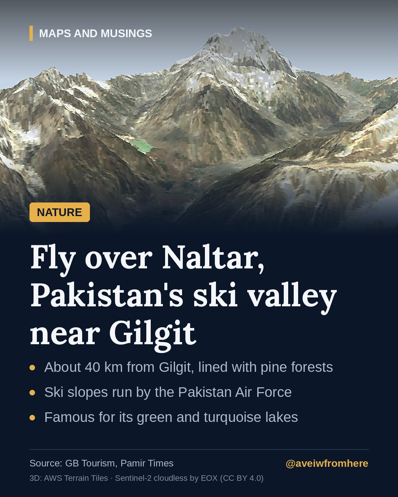

Naltar: Pakistan's ski valley, with forests and turquoise lakes
A short drive and a bumpy jeep ride from Gilgit, Naltar Valley has pine forests, colourful lakes and some of Pakistan's best ski slopes, run by the Pakistan Air Force.

North of Gilgit, where the Hunza River runs south through the Karakoram, a side valley climbs west into the mountains. This is Naltar, one of the greenest and most surprising valleys in Gilgit-Baltistan.
Getting there
Naltar is only about 40 kilometres from Gilgit, according to Gilgit-Baltistan's tourism department, but the journey takes time. Pamir Times describes the route: first along the road towards Nomal, then about 20 kilometres on a rough track along the Naltar River that is passable only by four-wheel-drive jeeps. The valley has two main villages, Naltar Payan (lower Naltar) and Naltar Bala (upper Naltar).
Forests in a desert of rock
Much of Gilgit-Baltistan is dry, bare rock. Naltar is different. The route into the valley is lined with thick pine forests, and in summer its meadows fill with wildflowers. Streams run down from the snowfields above, and the air is cool even in July.
Pakistan's ski valley
In winter, Naltar becomes one of the very few places in Pakistan where people can ski. The Pakistan Air Force maintains the ski facilities and hosts annual competitions, including national championships.
In 2014, a chairlift donated by a Swiss company was installed, running from the Air Force base camp towards Bargo Pass. Pamir Times described Naltar's main slope as around 2.5 kilometres long, among the longest in the country.
Naltar has produced Olympic athletes. Alpine skier Muhammad Abbas represented Pakistan at the 2010 Winter Olympics in Vancouver, and Muhammad Karim competed at the 2014 Games in Sochi, according to Pamir Times.
The lakes
Higher up the valley lie the Naltar lakes, known locally as the Bashkiri lakes. Depending on the light and the season, their water appears green, blue or turquoise, and they are among the most photographed spots in the north. Visitors come for trekking, camping, fishing and photography.
Life in the valley
Life here is not easy. Many families farm small plots, growing potatoes once a year, and many residents work for the ski resort. The valley is remembered too for a tragedy in May 2015, when an army helicopter carrying foreign diplomats crashed into a school in Naltar shortly before a planned ceremony to open the chairlift, killing seven people.
Tips for visitors
- Summer (roughly June to September) is best for the lakes, meadows and trekking.
- Winter is for skiing, but access depends on snow and road conditions.
- Hire a local jeep and driver from Gilgit or Nomal, and check the state of the track before setting out.
- Carry warm clothes: nights are cold even in summer.
- Take all your rubbish back with you. Naltar's forests and lakes are fragile, and they are the reason people come.